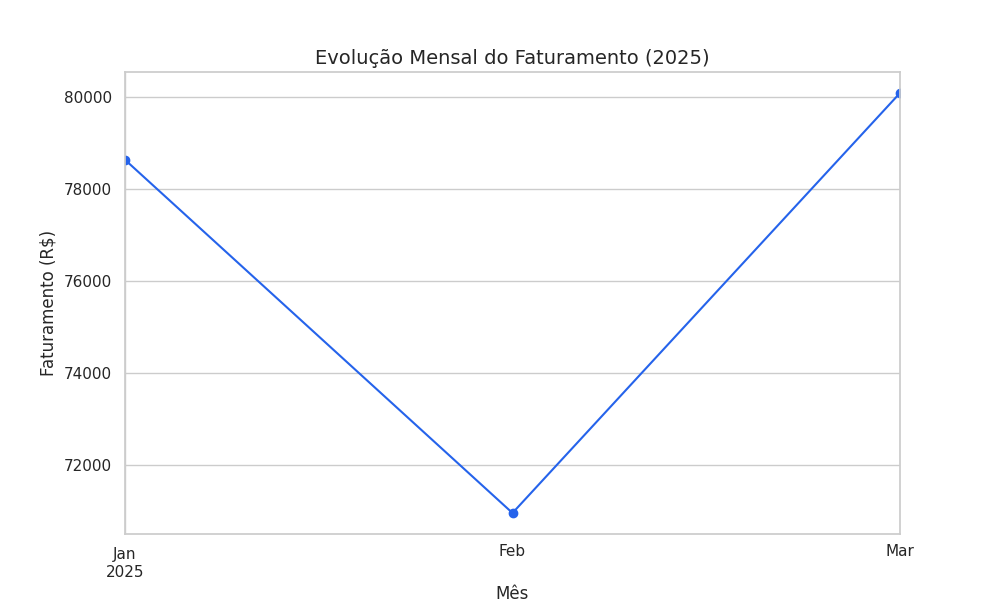
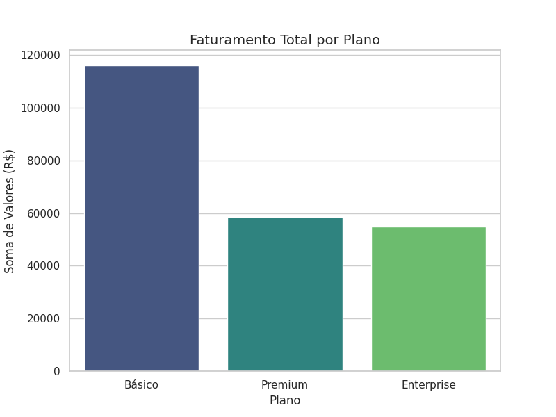

O Desafio
Uma empresa de SaaS estava enfrentando dificuldades para centralizar seus dados de vendas e entender quais planos eram mais rentáveis. Além disso, a taxa de cancelamento (churn) não era monitorada de forma sistemática, impedindo ações preventivas.
A Solução
Desenvolvi um pipeline de dados que extrai informações de um banco SQL, realiza o tratamento de dados com Pandas e gera visualizações automáticas. O foco foi criar métricas claras para a diretoria comercial.

Visualização da tendência de faturamento ao longo do tempo.

Comparativo de receita entre os planos Básico, Premium e Enterprise.
Principais Insights
- Dominância do Plano Enterprise: Apesar de possuir menos clientes, o plano Enterprise é responsável por 45% da receita total.
- Alerta de Churn: Identificamos que 12% das vendas iniciadas são canceladas, com maior incidência no plano Básico.
- Ticket Médio: O valor médio por venda estabilizou em R$ 280,00, permitindo previsibilidade de caixa.
Recomendação Estratégica
Focar esforços de retenção no plano Enterprise e revisar o processo de onboarding do plano Básico para reduzir o churn precoce.